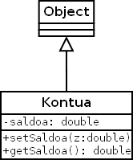

Programazioa > Objetuei bideratutako programazioaren oinarriak >
3. ariketa
Kontua izeneko klase bat inplementatzea nahi da hurrengo klase-diagrama kontutan hartuz. Ondoren, kontu ezberdinak sortzeko eta manipulatzeko, ProbaKontua izeneko beste klase bat sortuko dugu.
Kasu honetan Kontua klasearen saldoa atributua pribatua da eta sortuko ditugun kontuen informazioa ezin izango da gorde eta berreskuratu orain arte egin dugun bezala. Horretarako setSaldoa() eta getSaldoa() metodo berriak erabili beharko dira.
Klase-diagrama
- Kontua

Bideoa
- Set eta Get metodoak
Kodea
- Kontua.java
- ProbaKontua.java